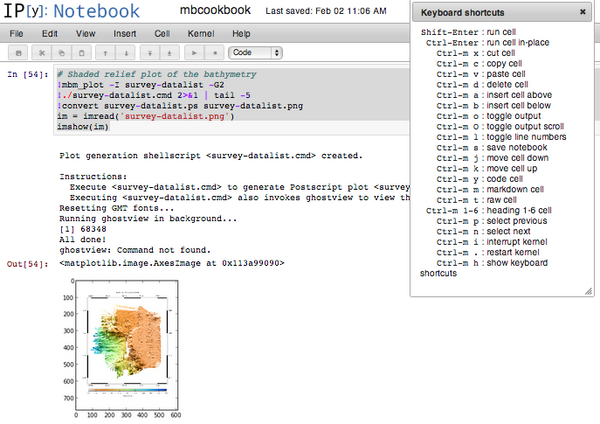

02.24.2013 09:32
What python packages are installed?
I few years ago, I discovered the python module yolk (https://github.com/cakebread/yolk). This is a nice module that makes it easy to ask questions about your python install from the command line.
virtualenv test-ve source test-ve/bin/activate pip install yolk yolk --list Python - 2.7.3 - active development (/sw/lib/python2.7/lib-dynload) pip - 1.2.1 - active setuptools - 0.6c11 - active wsgiref - 0.1.2 - active development (/sw/lib/python2.7) yolk - 0.4.3 - active # "yolk -U" or yolk --show-updates No newer packages found at The Cheese ShopGoing back to my normal python environment, you can see a list of packages that are out of date:
yolk -U | head Cython 0.16 (0.18) Pygments 1.5 (1.6) SQLAlchemy 0.7.9 (0.7.10) Shapely 1.2.16 (1.2.17) distribute 0.6.34 (0.6.35) docutils 0.8 (0.10) logilab-common 0.58.3 (0.59.0) Mercurial 2.4.2 (2.5.1) mock 0.7.0b3 (1.0.1) numexpr 1.4.2 (2.0.1)That's nice, but I've blogged about yolk before and it would be better to know how to do this kind of thing from within python. What if I want to list which packages I have installed from within an IPython notebook to document the state of the world that I used? I'd like the names of all python modules as found in pypi and the versions of a few critical packages.
deactivate # drop out of test-ve virtualenv --system-site-packages test2-ve source test2-ve/bin/activate pip install bigquery # This is Google's BigQuery python interface. ipython notebook --pylab=inlineAnd now, how do I ask about packages in the notebook?
import pkg_resources
pkgs = [pkg for pkg in pkg_resources.Environment()]
len(pkgs)
pkgs[:10]
['configobj',
'logilab-astng',
'shapely',
'pyproj',
'distribute',
'yolk',
'python-dateutil',
'pygments',
'mysql-python',
'numexpr']
bq_version = pkg_resources.get_distribution('bigquery').version
bq_version
'2.0.12'
pkg_resources.parse_version(version)
('00000002', '00000000', '00000012', '*final')
So, I'm using version 2.0.12 of the BigQuery python
module.02.20.2013 22:17
Django updated to 1.4.5 in fink for a security issue
Today the Django team is issuing two releases -- Django 1.3.7 and 1.4.5 -- to correct a packaging problem with yesterday's 1.3.6 and 1.4.4 releases. Both the 1.3.6 and 1.4.4 releases of Django contained stray .pyc files that caused "bad magic number" errors when running with some versions of Python. The 1.3.7 and 1.4.5 releases correct this, and also fix a bad documentation link in the project template settings.py file generated by manage.py startproject.and Security releases issued
These security releases fix four issues: one potential phishing vector, one denial-of-service vector, an information leakage issue, and a range of XML vulnerabilities. Here's a brief summary of each issue and its resolution: Issue: Host header poisoning: an attacker could cause Django to generate and display URLs that link to arbitrary domains. This could be used as part of a phishing attack. These releases fix this problem by introducing a new setting, ALLOWED_HOSTS, which specifies a whitelist of domains your site is known to respond to. Important: by default Django 1.3.6 and 1.4.4 set ALLOWED_HOSTS to allow all hosts. This means that to actually fix the security vulnerability you should define this setting yourself immediately after upgrading. Issue: Formset denial-of-service: an attacker can abuse Django's tracking of the number of forms in a formset to cause a denial-of-service attack. This has been fixed by adding a default maximum number of forms of 1,000. You can still manually specify a bigger max_num, if you wish, but 1,000 should be enough for anyone. Issue: XML attacks: Django's serialization framework was vulnerable to attacks via XML entity expansion and external references; this is now fixed. However, if you're parsing arbitrary XML in other parts of your application, we recommend you look into the defusedxml Python packages which remedy this anywhere you parse XML, not just via Django's serialization framework. Issue: Data leakage via admin history log: Django's admin interface could expose supposedly-hidden information via its history log. This has been fixed.So it was long past time to update django in fink.
02.18.2013 16:17
Tracking vessels at or under the sea
US government documents talk about using "national technical means" to avoid saying exactly how they are accomplishing their ship tracking. One of my favorite stories is of a friend describing being out on a US vessel doing patrol duty at night. They noticed a vessel on radar acting strangely. They tried raising the vessel on the VHF marine radio, but got nothing. As they worked their way towards the vessel, they saw no lights and still no response on the radio. They used the standard procedure of calling the vessel by the location again and again. When they got close, the flipped on their large spotlight. What did they find? A US patrol boat from the same agency out trying to catch illegal fisherman and who had just had their cover blown for the night. Oops. Reading between the lines on that story should give you some key details.
Back in 2005, I started on the faculty at CCOM as the lead of the Chart of the Future project with the goal of making maritime travel safer, more efficient and easier on mariners and the natural environment. And yes, I consider mariners like endangered species - it's bad news to be rough on either class of entities. I talked to a lot of mariners, maritime managers, government employees and researchers. I ended up with a pile of (highly entertaining) sea stories, but no way to make concrete assertions about maritime operations. I desperately wanted tangible metrics that I could use to identify how ships operations progress over time. How do ships move and react under a wide range of circumstances? As a result, I have thought about the many ways to understand what ships do. I consider the unified whole of ship and crew to be very complicated organism. From my blog and publications, you can see that I've tried a number of approaches that include AIS and the USCG MISLE incident database. When it comes to safety and efficiency on the water, it comes down to all parties knowing where they are, where everyone else current is, has been and is likely to be in the future, and combining that knowledge with how can perform and are likely to behave.
I sat down with two USCG Academy students last summer and we talked through how ships (and really any vehicle) might be tracked. I just ran into those notes and thought I would share my thoughts.
I see several general/top level categories. The first is sensing the world and that comes in passive flavors where we look for changes in the existing environment and active where we somehow change the world and look at the signal at various locations to see entities in the world that we are interested in. The second category are methods where the vehicle is actively or unintentionally saying (transmitting) where the vessel is located. That can either be a public broadcast like AIS or a private broadcast that we may or may not be on the addressee list for. The final category comes down to human intelligence where someone tells us where the vehicle is or we observe some administrative information (e.g. fuel purchase). There are a huge number of side channels that come out of the operations of ships that give a clue as to the travel history or plans of a ship.
- Sensing the environment
- Active
- Passive
- Announcing your location
- Side channels and human intelligence (HUMINT)
While I am doing my best to be complete, I don't intend this post to be comprehensive or referenced. It's not an academic paper and has had no review. I make no statement as to who may or may not use or have used any of these.
Passive sensing
I think it is best to start off by approaching the passive mechanisms that we use to find vehicles. All three of the categories are full of a wide variety of techniques. But with passive, we can start by talking about the basic world environment and the senses that humans have built in or can create in the world. Start with the fundamental forces in our environment. We have gravitation, electromagnetism, and the nuclear forces. Then think through the ways that a ship can emit or alter any of these forces as they exist in the world. Add to that what ships physically emit or absorb. From that we should be able to derive all of the passive mechanisms. Start first by thinking about how the presents of the vehicle in the world. Then think about what the vehicle might emit in the course of its operation (or even just existance).
The most obvious of the techniques is the electromagnetism (E&M) aspect. We have to think about the entire energy spectrum from ultra low frequency (ULF) all the way up to gamma rays. Yes, this actually includes the most fundamental human maritime sense of all time: sight. Think about the sources in the environment (even man made) that are in the environment. At the low frequencies where the wavelength is much larger than the object, it is likely going to be tough to measure a difference in the signal with or without that vessel. We then also have to think about what are the sensors that can pick up the energy and is it possible to interpret the results.
Down in the HF radio bands, we start having the potential for the material of the vehicle to absorb or deflect EM entergy.
At this point, I realize that I am not up for writing a dissertation on the topic, so I'm just going to dump the rest of my list. My apologies for duplicated entries.
- General radio direction finding. e.g. Rescue 21 Can be off of any RF source… radar, AIS, encrypted blue force AIS, voice, cell data. From HF to microwave.
- AIS
- Space
- Ground (w/ and without large towers)
- Airborne platforms
- From other ships / vehicles
- Buoys
- LRIT
- Radar
- Passive (listen for other radars painting the world)
- Active
- Sat looking down (probably more imaging type radars
- Shore and ship based horizontal systems
- VMS - Vessel Monitoring Service for fishing
- Imaging
- Categories: visible, thermal, low light, multispectral
- Wake detection vrs direct detection
- Satellites
- aircraft/balloons/helicopters/UAVs
- shore/ground based cameras (e.g. entrance to SF harbor)
- Acoustic - passive listening
- Sounds in air (from balloons, UAVs, etc) While sound in water is much more efficient, you can get around faster in air.
- Bottom mounted (e.g. SOSUS, Neptune/Orion)
- gliders, AUVs, subs
- buoys
- dippers (e.g. gliders and the old P3 Orion dropping disposable sonobuoys)
- Active acoustics:
- Upward looking sonars and ADCP. e.g. already there for currents
- Fixed structure active sonars. e.g. on a bridge pier
- Ships and other mobile active sonars
- Inmarsat phone calls (and possibly iridium) headers have position of the mobile unit(s) in the call
- Tracking the Internet IP address (can be end up often just getting the downlink)
- Human Intelligence
- Other boaters
- Crew
- Shore based observers
- Purchases of supplies, replacement parts and consumables.
- Work orders and other construction related staff.
- Notices of Arrival submitted to the USCG
- Self broadcast position reports
- AMVER - Mariners helping mariners in distress
- VOS - Ships giving weather reports
- Google Latitude, Facebook, 4square, G+ checkins, Good Inc., GeoLoqi
- Posting geotagged images
- Cell phones talking to towers (and additional fake towers)
- This is a big one for government staff with blackberries
- Satellite position recorders
- Spot personal locators
- Intentionally deploying reflective targets possibly with a unique signature on a ship. e.g. QR code on the roof or police cars w/ a number on the roof.
- Wonky ones like detecting tracers
- Trash
- oil signature
- radioactive signatures for those that have them
- Lights at night.
- Reflectors and distinctive paint that aids identification.
- Has anyone done longer range RF ID chips?
- Magnetometers
- Airborne (e.g. P3 Orions and general magnetic surveys)
- Magnetic observatories
- Towed
- Air gap sensors on bridges e.g. NOAA PORTS. Generate a profile
- An activated EPIRB (I had discounted this, but now I realize how important this is)
- VTS reports
- Peoples activities leading up to being on the ship e.g. http://location/ at google with Door badges. TWIC badging, car tracking, car tolls, plane tickets, cargo manifests, fish sales, fuel/supply purchases, boat maintenance
- LIDAR
- side looking (e.g. across the entrance to a harbor)
- airborne (small spot size). Any different potential with topo or bathymetry lidar? Perhaps see the bubbles in a wake with bathy?
- Space based. e.g. Ice SAT being used by people studying trees in Brazil
- Things the ship leaves behind… trash, oil, other chemicals, heat, etc
- Detecting a related party Support vessels, launches
- custom proprietary tracking devices
- Damage to environment
- Touching the sea floor or turbulence causing scour
- Marine animals hurt by sound, chemicals, heat, cold (LNG regasification), or physical damage (e.g. ship strike or prop injuries)
- Waves absorbed/reflected/generated, wake, or turbulence
- Support vessels presence or absence
- Government declared security zones (e.g. for submarines or LNG ships)
- Absence or presence of vessels that know of the vessel
- Bioluminescence of disturbed surroundings.
- Notices of arrival, departure and cruise plans
- Movement of cargo and/or fuel in anticipation or result up arrival or departure
- Changes in prices of supplies, commodities, hotel rates relating to the ship.
- General change in behavior of dock workers or the overall harbor infrastructure.
- Travel of known crew (or family members) to or from an end point. Banking activity and other related personal activities.
- Financial transactions anywhere in the chain of people and businesses related to the vessel.
- Geotagged and/or time tagged images sent by people on the ship or images of the ship by others
- Past established history and patterns. People are creatures of habit.
- Vessel kinematic constraints. e.g. draft is too deep for certain areas or unable to handle seas greater than some size.
- Known endurance constraints
- IP addresses, traceroutes and round-trip times of Internet network traffic. May only give you downlink station, but that might be enough for many purposes and especially interesting is knowing when these change.
- Analysis of bilge water to see where the ship has been. e.g. isotope analysis like Sr/Rb, what is living in the water or sediment at the bottom of the tanks.
- Chemical or isotope analysis of consumables. bunker oil, lubricants etc.
I grew up under the flight path of the P3 Orions from Moffett
Field that patrolled the pacific with dropped sono-bouys and their
tail mounted magnetometers, so this topic has been in my mind for
almost 4 decades. The times have changed (e.g. the end of the cold
war) but many of the strategies for hiding and finding are no
different. Ships may hide out of site or in plane sight (e.g. drug
dealer using a cover of legitimate business). Ships are complicated
devices and even with the greatest of care, they leak information
like crazy. The importance of that information flow varies with
time and need. For example, a notice of arrival is unlikely to help
much in a high seas potential collision situation.
I haven't talked much in this about knowing which vessel an
observation relates to. aka how ambiguous is an observation. Nor
have I talked about proof of identity. Just because an AIS
transmitter broadcasts a particular MMSI and static data with name
and IMO, that does not mean that those are correct. If there is an
actor in the environment that is trying to alter the results,
things get very confusing quick.
Tracking is already happening for many reasons. Most of it is
behind closed doors. I got to see what Iceland is doing and am
excited by applications theirs where when a ship stops transmitting
AIS, there is a rescue helocopter on the way after 30 minutes. That
will absolutely save lives. What are the most effective efforts we
can make as a global community to best use this information to
improve our environment, economies, working conditions and entire
world?
I hope you enjoyed this discussion. As a computer scientist and a
robotics engineer, I am always looking at the systems I work with
and build to see how they can communicate to me what they are
doing. This is often refered to as "debugging". Can the robot blink
a light when some event happens? What if the robot is on Mars? Even
things like looking at jitter in packets can tell you all sorts of
interesting things. If you really like this stuff, it's easy to
play with. Grab nmap and wireshark and point them at your own
computer. (I take no responsibility if you use them unwisely.) Then
check out traceroute and you will start into a very interesting
world.
sudo nmap localhost -sV Starting Nmap 6.00 ( http://nmap.org ) at 2013-02-18 16:26 EST Nmap scan report for localhost (127.0.0.1) Host is up (0.00038s latency). Not shown: 496 filtered ports, 494 closed ports PORT STATE SERVICE VERSION 22/tcp open ssh OpenSSH 5.2 (protocol 2.0) 25/tcp open smtp Postfix smtpd 80/tcp open http Apache httpd 2.2.14 ((Unix)) 88/tcp open kerberos-sec Mac OS X kerberos-sec 548/tcp open afp Apple AFP (name: snipe; protocol 3.3; Mac OS X 10.5 - 10.6; MacPro) 631/tcp open ipp CUPS 1.4 5432/tcp open postgresql PostgreSQL DB 8.4.1 - 8.4.9 5900/tcp open vnc Apple remote desktop vnc 7937/tcp open nsrexec (nsrexec V1) 1 (rpc #390113) 7938/tcp open rpcbind (rpcbind V2) 2 (rpc #100000) Service Info: Hosts: snipe.ccom.nh, snipe.ccom.nh; OS: Mac OS X; CPE: cpe:/o:apple:mac_os_x Service detection performed. Please report any incorrect results at http://nmap.org/submit/ . Nmap done: 1 IP address (1 host up) scanned in 29.71 secondsThen give a look at these two books:
- TCP/IP Illustrated, Volume 1: The Protocols (2nd Edition), by Kevin Fall and W. Richard Stevens
- The ARRL Handbook for Radio Communications YYYY
02.10.2013 13:45
The USCG and autonomous vehicles
When I talked to the USCG about that, I was told in some rather overly clear language that I would not do that in US waters. No way, no how.
Now this... (yeah, I am a little behind)
November 19, 2012 Docket Management Facility (M-30) U.S. Department of Transportation West Building Ground Floor, Room W12-140 1200 New Jersey Avenue SE. Washington, DC 20590-0001 Reference: Department of Homeland Security, Docket USCG-2012-0212 Subject: UUV Manufacturers' Concerns Regarding NAVSAC Task 08-07, Resolution 11-02 Proposed Changes to Inland and COLREGS to Address Unmanned Underwater and Unmanned Surface Vehicles To Whom It May Concern, The Association for Unmanned Vehicle Systems International (AUVSI) is aware that the Navigation Safety Advisory Council (NAVSAC), an industry advisory body to the U.S. Coast Guard, has proposed revisions to the existing Navigation Rules that will affect unmanned maritime vehicles. AUVSI believes the proposed regulations would be highly impractical for most widely-used Unmanned Underwater Vehicles (UUVs), but especially for UUVs under 8m in length and 1m in diameter. The proposed new rules would have a significant impact on the industry and the U.S. Navy, on the performance and cost of the vehicles, and would provide very little benefit in terms of maritime safety. Since UUVs are not remotely piloted because of the inability to maintain constant communication with them, they should not be subject to rules for manned vessels. UUV Manufacturers could generally acknowledge that the new regulations may be relevant for large diameter UUVs which might create a potential hazard for navigation ...I never got around to finishing this post. It seems that the current view out there from the US Navy / USCG (DHS) is that they are now going to mandate some sort of "watch standing" for autonomous vehicles and there are suggestions that AIS transmit of position may become required in the near future. I haven't researched all this enough to really know what is going on and I am seriously out of the loop.
02.10.2013 02:24
scikit-learn and an ipython notebook
I made an ipython notebook while following along. I was on ubuntu 12.04, and there are newer versions out of the main libraries, so here is what I did to get set up (and to try out putting code in my blog via a github gist):
When I went to make a nbviewer of the notebook in a gist, I ran into trouble. When I make a gist, I get a URL like this that has my account in the URL:
https://gist.github.com/schwehr/4748729
But what I had to do was remove the account from the URL before I pasted it into http://nbviewer.ipython.org/:
https://gist.github.com/4748729
http://nbviewer.ipython.org/4748729/
And finally, here is just the python in the form of a gist without the ipython notebook wrapping it:
02.02.2013 14:31
mbsystem and the mbcookbook as an IPython Notebook
It's a little clunky in that I have to put a ! in front of each command to bash and the images are super small, but it was fun to
https://gist.github.com/4698869
The notebook can be viewed here:
http://nbviewer.ipython.org/4698869/
Setup (because there are definitely a few things that ended up being system specific):
- bash
- mac osx 10.8
- fink install mbsystem # version 5.3.2012
- fink install graphicsmagick-imagemagic
- fink install ipython-py27 # version 0.13.1
- fink install matplotlib-py27 # version 1.2.0
